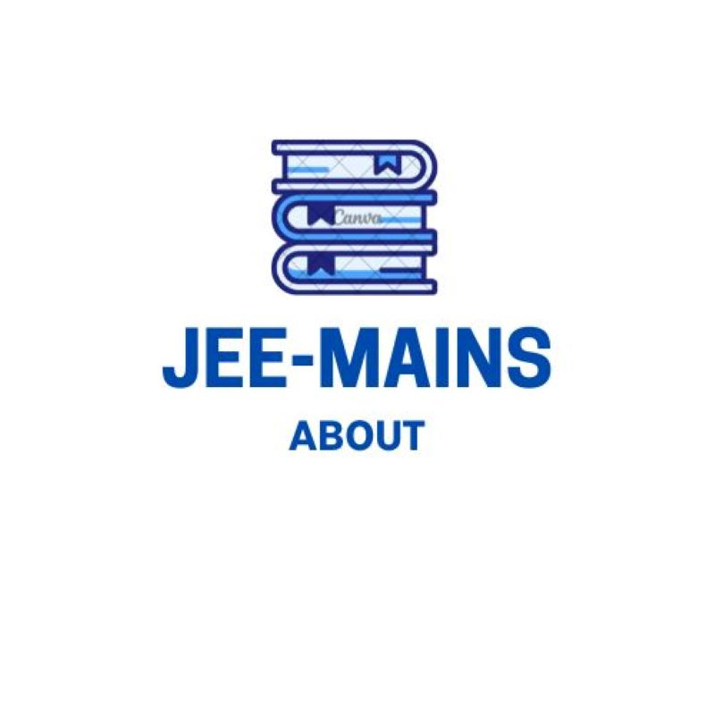
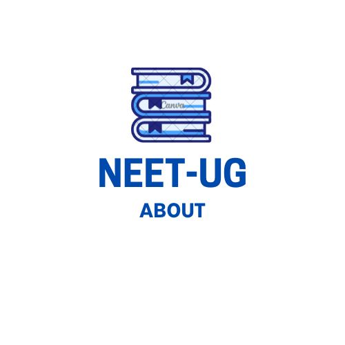
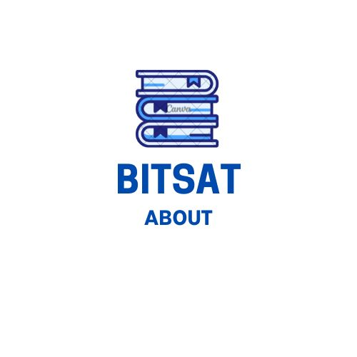
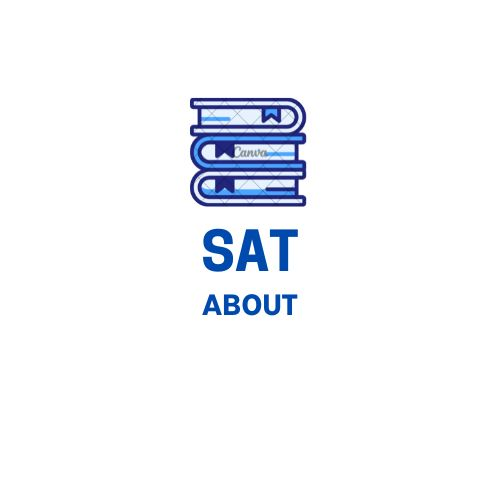

👉 Admissions to B.Tech./B.E. & B.Arch./B.Planning in premier institutes of India like IITs and ISM Dhanbad.
!
👉 JEE Mains qualified students can attempt the exam with the maximum of two attempts for two consecutive years. Fully computer-based examination.
!
👉 Questions will be more analytical and, thus interpretation and logical skills of the students will be tested along with their speed of applying basic concepts.
!
👉 Staggering 15,000+ seats in IITs are filled through this examination.

👉 Admissions to B.Tech./B.E. B.Arch, B.Planning in NITS, IIITs and other Centrally Funded Technical Institutes. Also, a student should qualify JEE Mains with a high percentile (top 2,50,000 candidates) to be eligible for JEE Advanced.
!
👉 Computer-based for B.Tech./B.E. and paper + computer based for B.Arch/B.Planning.
!
👉 Conducted twice a year to reduce droppers.
!
👉 It has two papers - one for B.Tech./B.E. and the other one for B.Arch/B.Planning.
!
👉 JEE allots equal number of questions to be attempted in physics, chemistry and mathematics with a total of 75 questions. Each section having 25 questions and each question carrying 4 marks with negative marks for incorrect answers (negative marking not applicable for numerical type questions).
!
👉 Questions will be more direct and the speed of applying the basic concepts will be tested here.
!
👉 35,800+ seats are filled in NITs, GFTIs and IIITs through this examination every year.

👉 Conducted by NTA for MBBS, BDS, BAMS, BSMS, BUMS and BHMS admission into all govt. and private medical colleges including the UG courses in AIIMS & JIPMER.
!
NEET 2022 Question pattern
👉 It is a paper-based 3 hrs 20 min exam.
!
👉 It has only MCQ type questions with negative marking for incorrect answers.
!
👉 It has two sections for each subject. In section two, candidate can attempt any 10 out of 15 questions.
!
👉 Total of 200 questions covering physics (35+15), chemistry (35+15), Botany (35+15) and Zoology (35+15) will be given in the question paper. However, a candidate must attend total of 180 questions from 200 questions including section two.
!
👉 For now, 90,500+ MBBS seats are being offered under this examination, with Tamil Nadu offering the highest number of seats (around 5000+ seats) when compared to the other states.

👉 Exam conducted for integrated engineering and science programs for the admissions into colleges under the deemed university of BITS Pilani (Pilani, Goa and Hyderabad campuses).
!
👉 Computer-based examination. Conducted twice a year having four sections (Physics, Chemistry, Maths/Biology), Logical ability and English Proficiency.
!
👉 Only MCQ type wtih negative marking for incorrect answers.
!
👉 2,200+ seats are now being offered by these three campuses.

👉 For admission into premier institutes across the world like NUS, MIT, Harvard, University of California, etc.
!
👉 Computer-based examination.
!
👉 The paper focusses mainly on testing the mathematical, reading and language skills of the students.